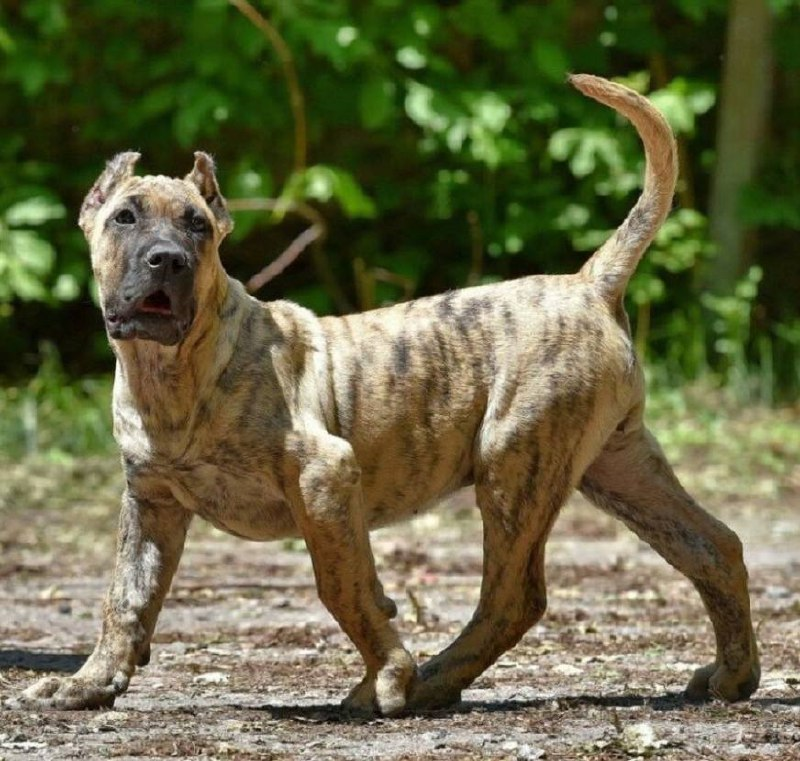

Канарский дог

Происхождение: Испания
Размер: Крупные (рост: 56–66 см, вес: 40–60 кг)
Характер: Уверенные, спокойные, но агрессивны к чужим
Особенности: Короткая шерсть тигрового или палевого окраса. Прирожденные охранники, нуждаются в твердой руке. Не подходят для новичков
Здоровье: Дисплазия, эпилепсия